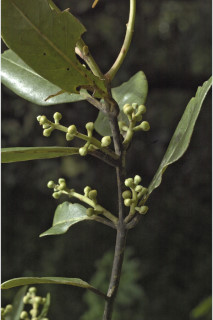
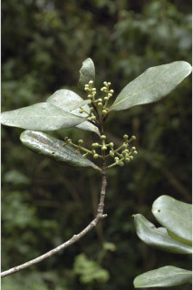
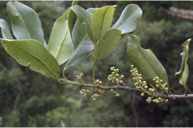
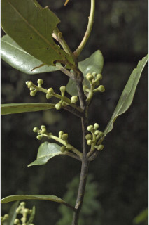
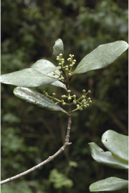
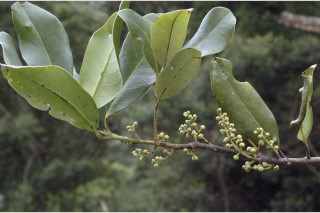

Trees up to 30 m tall.
30 ಮೀ.ವರೆವಿಗೆ ಬೆಳೆಯುವ ಮರಗಳು.
30 മീറ്റര് വരെ ഉയരമുളള മരങ്ങള്.
மரங்கள் 30 மீ. உயரம் வரை வளரக்கூடியது.
Bark brownish, smooth.
ತೊಗಟೆ ನಯವಾಗಿದ್ದು ಕಂದು ಬಣ್ಣದಲ್ಲಿರುತ್ತದೆ.
മിനുസമായ തവിട്ട് നിറത്തിലുളള പുറം തൊലി.
மரத்தின் பட்டை ப்ரவுன் நிறமானது, வழுவழுப்பானது.
Branchlets subterete, glabrous.
ಕಿರುಕೊಂಬೆಗಳು ಉಪ-ದುಂಡಾಗಿದ್ದು ರೋಮರಹಿತವಾಗಿರುತ್ತವೆ.
അരോമിലമായ, ഏതാണ്ട് ഉരുണ്ടിരിക്കുന്ന ഉപശാഖകള്
சிறிய நுனிக்கிளைகள் குறுக்குவெட்டுத் தோற்றத்தில் வளையமானது, உரோமங்களற்றது.
Leaves simple, alternate, spiral; petiole 2-3.5 cm long, stout, canaliculate, glabrous; lamina 13.5-18 x 6-9.5 cm, elliptic to elliptic-obovate, apex acute or obtuse, base rounded - attenuate to acute, margin entire, glabrous, glaucous beneath, coriaceous; midrib slightly canaliculate; secondary_nerves ca. 8 pairs, not prominent; tertiary_nerves obscure; higher order nerves closely reticulate.
ಎಲೆಗಳು ಸರಳವಾಗಿದ್ದು ಪರ್ಯಾಯ ಮತ್ತು ಸುತ್ತು ಜೋಡನಾ ವ್ಯವಸ್ಥೆಯಲ್ಲಿ ಇರುತ್ತವೆ;ತೊಟ್ಟುಗಳು 2-3.5 ಸೆಂ.ಮೀ. ಉದ್ದ ಹೊಂದಿದ್ದು ದೃಢವಾಗಿದ್ದು ಕಾಲುವೆ ಗೆರೆ ಸಮೇತವಿರುತ್ತವೆ ಹಾಗೂರೋಮರಹಿತವಾಗಿರುತ್ತವೆ; ಪತ್ರಗಳು 13.5-18 X 6-9.5 ಸೆಂ.ಮೀ.ವರೆಗಿನ ಗಾತ್ರ ಹೊಂದಿದ್ದು ಅಂಡವೃತ್ತದಿಂದ ಅಂಡವೃತ್ತ-ಬುಗುರಿವರೆಗಿನ ಆಕಾರ ಹೊಂದಿರುತ್ತವೆ ;ತುದಿ ಚೂಪು ಅಥವಾ ಚೂಪಲ್ಲದ ಮಾದರಿಯಲ್ಲಿರುತ್ತದೆ ಮತ್ತು ಬುಡ ದುಂಡು-ಒಳಬಾಗಿದ ರೀತಿಯಲ್ಲಿರುತ್ತದೆ; ಅಂಚು ನಯವಾಗಿರುತ್ತದೆ; ಪತ್ರಗಳು ರೋಮರಹಿತವಾಗಿದ್ದು ತಳಭಾಗದಲ್ಲಿ ಮಾಸಿದ ಬೂದು ಹಸಿರು ಬಣ್ಣ ಹೊಂದಿರುತ್ತದೆ; ಮೇಲ್ಮೈ ತೊಗಲನ್ನೋಲುವ ಮಾದರಿಯಲ್ಲಿರುತ್ತದೆ; ಮಧ್ಯ ನಾಳ ಪತ್ರ ಕೊಂಚ ಕಾಲುವೆಗೆರೆ ಸಮೇತವಿರುತ್ತದೆ;ಎರಡನೇ ದರ್ಜೆಯ ನಾಳಗಳು ಅಂದಾಜು 8 ಜೋಡಿಗಳಿದ್ದು ಪ್ರಮುಖವಾಗಿರುವುದಿಲ್ಲ;ಮೂರನೇ ದರ್ಜೆಯ ನಾಳಗಳು ಅಸ್ಪಷ್ಟವಾಗಿರುತ್ತವೆ;ನ್ನತ ದರ್ಜೆಯ ನಾಳಗಳು ತೀರಾ ಸನಿಹದಲ್ಲಿದ್ದು ಜಾಲಬಂಧ ನಾಳ ವಿನ್ಯಾಸ ಹೊಂದಿರುತ್ತವೆ.
ലഘുവായ, ഇലകള്, ഏകാന്തരമായി, സര്പ്പിളമായടുക്കിയതാണ്; ചാലുളള അരോമിലമായ, ദൃഢമായ, ഇലഞെട്ടിന് 2 സെ.മീ മുതല് 3.5 സെ.മീ വരെ നീളം; പത്രഫലകത്തിന് 13.5 സെ.മീ തൊട്ട് 18 സെ.മീ വരെ നീളവും 6 സെ.മീ തൊട്ട് 9.5 സെ.മീ വരെ വീതിയും, ആകൃതി ദീര്ഘ വൃത്തം തൊട്ട് ദീര്ഘവൃത്തീയ-അപഅണ്ഡാകാരം വരെയാകാം, പത്രാഗ്രം നിശിതമോ ഉപകോണാകാരത്തിലോ ആണ്, പത്രാധാരം വൃത്താകാരത്തോടെ - നേര്ത്തവസാനിക്കുന്നതു തൊട്ട് നിശിതം വരെയാകാം, അരികുകള് അവിഭജിതമാണ്, അരോമിലം, കീഴെ നീലരാശി കലര്ന്നതാണ്, ചര്മ്മില പ്രകൃതം; മുഖ്യസിര ചെറുതായി ചാലുളളതാണ്; പ്രബലമല്ലാത്ത ഏതാണ്ട് 8 ജോഡി ദ്വിതീയ ഞരമ്പുകള്; ത്രിതീയ ഞരമ്പുകള് അപ്രസക്തമാണ്; മറ്റു ചെറു സിരകള് അടുത്ത് ജാലിതമാണ്.
இலைகள் தனித்தவை, மாற்றுஅடுக்கமானவை, சுழல் போன்று அமைந்தவை; இலைக்காம்பு 2-3.5 செ.மீ. நீளமானது, தடித்தது, குறுக்குவெட்டுத் தோற்றத்தில் கேனாலிகுலேட், உரோமங்களற்றது; இலை அலகு 13.5-18 X 6-9.5 செ.மீ., நீள்வட்டம் முதல் நீள்வட்டம்-தலைகீழ் முட்டை வடிவானது, அலகின் நுனி கூரியது அல்லது மழுங்கியவை, அலகின் தளம் வட்டமானது-அட்டனுவேட் முதல் கூரியது, அலகின் விளிம்பு முழுமையானது, அலகின் கீழ்பரப்பு மெழுகு பூசியது போன்றது அல்லது சாம்பல் கலந்த நீல நிறமானது (க்களாக்கஸ்), கோரியேசியஸ்; மையநரம்பு மேற்பரப்பில் அலகின் பரப்பைவிட பள்ளமானது; இரண்டாம் நிலை நரம்புகள் 8 ஜோடிகள், தெளிவற்று காணப்படும்; மூன்றாம் நிலை நரம்புகள் கண்களுக்கு புலப்படாது; மற்ற சிறு நரம்புகள் நெருக்கமான வலைப்பின்னல் போன்றது.
Flower in axillary racemes.
ಹೂಗಳು ಅಕ್ಷಾಕಂಕುಳಿನಲ್ಲಿರುವ ಮಧ್ಯಾಭಿಸರ ಪುಷ್ಪಮಂಜರಿಯಲ್ಲಿರುತ್ತವೆ.
പൂക്കള് കക്ഷീയ റസീമുകളിലുണ്ടാകുന്നു.
மலர்கள் இலைக்கோணங்களில் காணப்படும் ரெசீம் வகை.
Berry, depressed globose, 2 cm long, seated on short flattened fruiting_perianth_cup; seed 1.
ಬೆರ್ರಿ ಕುಗ್ಗಿದ ಗೋಳಾಕಾರದಲ್ಲಿದ್ದು 2 ಸೆಂ.ಮೀ. ಉದ್ದವಿರುತ್ತದೆ ಹಾಗೂ ಕಿರಿದಾದ ಚಪ್ಪಟೆಯಾದ ಪುಷ್ಪಾವರಣದ ಬಟ್ಟಲಿನ ಮೇಲೆ ಆಸಿನವಾಗಿರುತ್ತದೆ ಮತ್ತು ಒಂದು ಬೀಜವನ್ನು ಒಳಗೊಂಡಿರುತ್ತದೆ.
ഒറ്റവിത്ത്മാത്രമുളള കായ, പരന്ന പരിദളക്കപ്പിനകത്തിരിക്കുന്ന 2 സെ.മീ നീളമുളള, കുഴിഞ്ഞ ഗോളാകാര ബെറിയാണ്.
முழுச்சதைகனி (பெர்ரி), அழுந்திய கோளவடிவானது, 2 செ.மீ. நீளமானது, சிறிய கோப்பை வடிவ தட்டையான ப்பீரியான்ந்த் மேல் அமைந்தவை; விதை ஒன்றுடையது.


 




